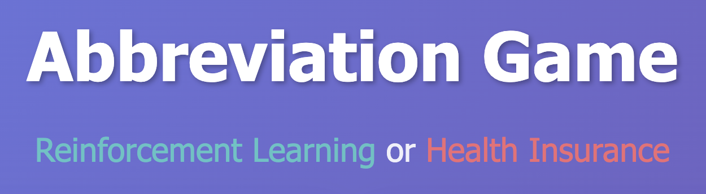
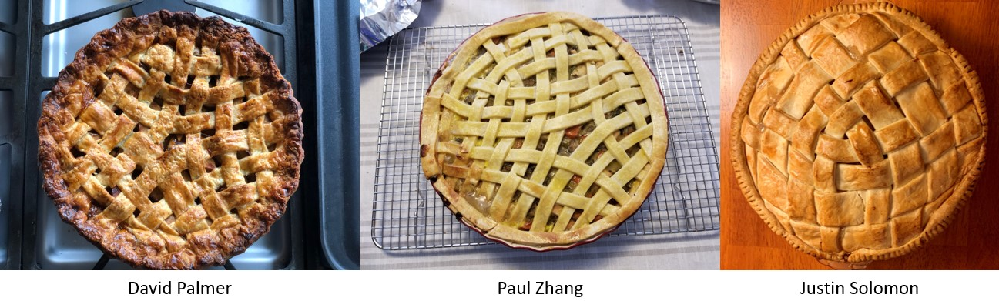
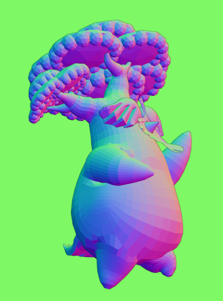

Side Projects

Image Triangulation
Variational image triangulation algorithm to coarsen and stylize images into triangle mosaics. Try it yourself here.

Abbreviation Game
Test how good you are at distinguishing acronyms from different contexts! Play the game.

Topological Pies
Standard pie weaves don't taste as good. Topological entities carry more flavor.

Digital Sculpting - Hestu
I made the same blender donut we all did, then went and made Hestu!

Make it dance!
You can see stretching artifacts of bad topology and skinning weights. Sadly I'm not a pro animator.